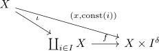

product with a discrete space and coproduct
Proposition
Let $X$ be a topological space, $I$ be a set, $I^{\delta}$ the space with the discrete topology. Then there exists a canonical homeomorphism
\begin{align*}
\coprod_{i \in I} X \cong X \times I^{\delta}
\end{align*}
for the topological sum and the product topology given by
\begin{align*}
f: \coprod_{i \in I} X \rightarrow X \times I^{\delta}
x_i \mapsto& (x,i)
\end{align*}
Proof
continuous
follows from universal property, as

bijective
clear
open
glueing lemma for open maps on an open covering Consider
\begin{align*}
(\mathrm{id}, \mathrm{const}_i) : X \rightarrow X \times I^{\delta}
\end{align*}
then for $O \subseteq X$, we get
\begin{align*}
(\mathrm{id}, \mathrm{const}_i)(O) = O \times \{i\}
\end{align*}
where $\{i\}$ is open, as $I^{\delta}$ is discrete and $O$ is open by assumption. Thus $O \times \{i\}$ is open.